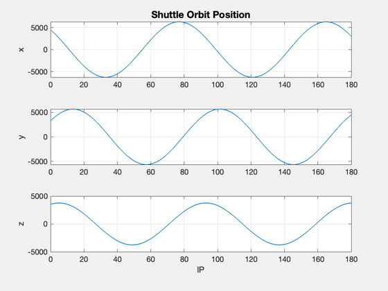
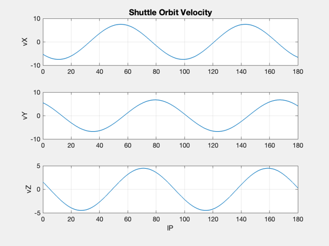
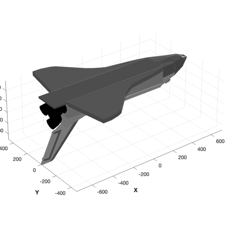
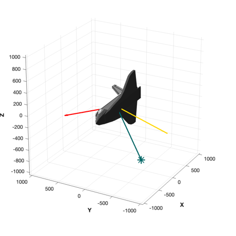
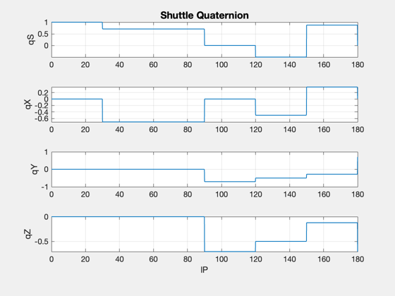

Space Shuttle attitude timeline
Performs an optional animation. Begin with the shuttle on-orbit position at 520 sec., inclination = 34.999:
Time Radius (m) RA deg X-Pos (m) Y-Pos Z-Pos X-velocity Y-velocity Z-velocity (sec) 520 6561704.6 36.229 4464550.86 3271119.59 3524702.75 -5277.89 5508.86 1563.49
We would like to input this attitude timeline into STK.
Time (MIN.) Yaw Pitch Roll 0 0 0 0
30 90 0 0
90 90 0 180
120 90 -90 180
150 -46 36 0
180 -90 1.8 180 ------------------------------------------------------------------------ See also Eul2Q, QLVLH, QPose, QSLERP, Plot2D, TimeGUI, TimeLabl, STKAtt, JD2000, JD2Date, RV2El, RVFromKepler, DrawSCPlugIn ------------------------------------------------------------------------
Contents
%-------------------------------------------------------------------------- % Copyright (c) 2001 Princeton Satellite Systems, Inc. All rights reserved. %------------------------------------------------------------------------------- % 2016.1 - Use new SetCAD functions and update animation to draw vectors using % DrawSCPlanPlugIn %-------------------------------------------------------------------------------
STK Information
%---------------- sTKVersion = '3.0';
Run a Matlab animation
%------------------------ runSim = 'true';
Constants
%---------- degToRad = pi/180; maneuverTime = 60; % Seconds to do a maneuver angles = [0 90 90 90 -46 -90;... 0 0 0 -90 36 1.8;... 0 0 180 180 0 180]*pi/180; q = Eul2Q(angles) timeLine = [0 30 90 120 150 180]*60; t = linspace(0,180*60,1801); nSim = length(t);
q =
1 0.70711 4.3298e-17 -0.5 0.87545 -0.011107
0 -0.70711 -4.3298e-17 -0.5 0.37161 0.011107
0 0 -0.70711 -0.5 -0.28445 0.70702
0 0 -0.70711 -0.5 -0.12074 -0.70702
Generate the quaternions
%------------------------- j = 2; qECIToBody = zeros(4,nSim); for k = 1:nSim tMnvrStart = timeLine(j) - maneuverTime; if( t(k) < timeLine(j) ) qECIToBody(:,k) = q(:,j-1); elseif( (t(k) > tMnvrStart) && (t(k) < timeLine(j)) ) qECIToBody(:,k) = QSLERP( q(:,j-1), q(:,j), (t(k) - tMnvrStart)/maneuverTime); else j = j + 1; qECIToBody(:,k) = q(:,j-1); end end epoch = JD2Date; [err, message] = STKAtt( FileFullpath('STKShuttleAttitude.txt'),sTKVersion,... epoch,nSim,t,qECIToBody,'quaternion');
Global for the TimeGUI
%------------------------ global simulationAction simulationAction = ' ';
Load the 3D model
%------------------- g = load('ShuttleModel'); rMSAxis = [3 2 2 2 2];
Initialize the orbits
%---------------------- r = [4464550.86; 3271119.59; 3524702.75]*1e-3; v = [-5277.89; 5508.86; 1563.49]*1e-3; el = RV2El( r, v ); [r, v] = RVFromKepler( el, t ); [tP,lP] = TimeLabl( t ); jD = JD2000; Plot2D( tP, r, 'lP', ['x';'y';'z'], 'Shuttle Orbit Position') Plot2D( tP, v, 'lP', ['vX';'vY';'vZ'],'Shuttle Orbit Velocity') Plot2D( tP, qECIToBody, 'lP', ['qS';'qX';'qY';'qZ'],'Shuttle Quaternion') zoom on if( ~strcmp( 'true', runSim ) ) return; end 

Initialize the 3D window
%------------------------- g = SetCADQuaternion( g, qECIToBody(:,1) ); g = SetCADState( g, r(:,1), v(:,1) ); g.name = 'Space Shuttle Orbiter'; tag3DWindow = DrawSCPlanPlugIn( 'initialize', g );
Initialize the time display
%---------------------------- tSamp = t(2) - t(1); tToGoMem.lastJD = 0; tToGoMem.lastStepsDone = 0; tToGoMem.kAve = 0; ratioRealTime = 0; [ ratioRealTime, tToGoMem ] = TimeGUI( nSim, 0, tToGoMem, 0, tSamp, 'Shuttle Timeline' ); for k = 1:nSim % Display the status message %--------------------------- [ ratioRealTime, tToGoMem ] = TimeGUI( nSim, k, tToGoMem, ratioRealTime, tSamp ); % Specify transformations %------------------------ g = SetCADQuaternion( g, qECIToBody(:,k) ); g = SetCADState( g, r(:,k), v(:,k) ); g(1).body(2).bHinge = struct( 'angle', 0, 'axis', 1 ); g(1).body(3).bHinge = struct( 'angle', 0, 'axis', 1 ); for j = 1:5 g(1).body(j+3).bHinge = struct( 'angle', 0, 'axis', rMSAxis(j) ); end DrawSCPlanPlugIn( 'vectors', tag3DWindow, g, jD + t(k)/86400 ); % Time control %------------- switch simulationAction case 'pause' pause simulationAction = ' '; case 'stop' break; case 'plot' break; end end TimeGUI( 'close' ) Plot2D( tP(1:k), r(:,1:k), 'lP', ['x';'y';'z'], 'Shuttle Orbit Position') Plot2D( tP(1:k), v(:,1:k), 'lP', ['vX';'vY';'vZ'],'Shuttle Orbit Velocity') Plot2D( tP(1:k), qECIToBody(:,1:k), 'lP', ['qS';'qX';'qY';'qZ'],'Shuttle Quaternion') %-------------------------------------- % PSS internal file version information %-------------------------------------- % $Date$ % $Id: b1c43a676b8004cc01a3dc60852c11180547df10 $ 